Text
×

❮
❯
Text
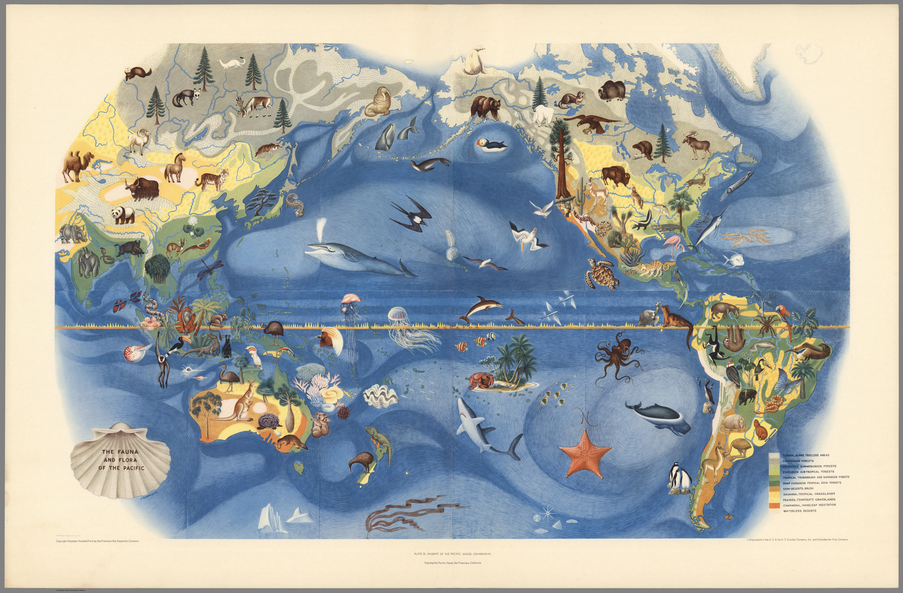
"The Fauna and Flora of the Pacific" by Miguel Covarrubias (1939). One of six maps made for the Pacific House during the Golden Gate International Exposition in San Francisco in 1939.
David Rumsey Map Center Stanford University Libraries
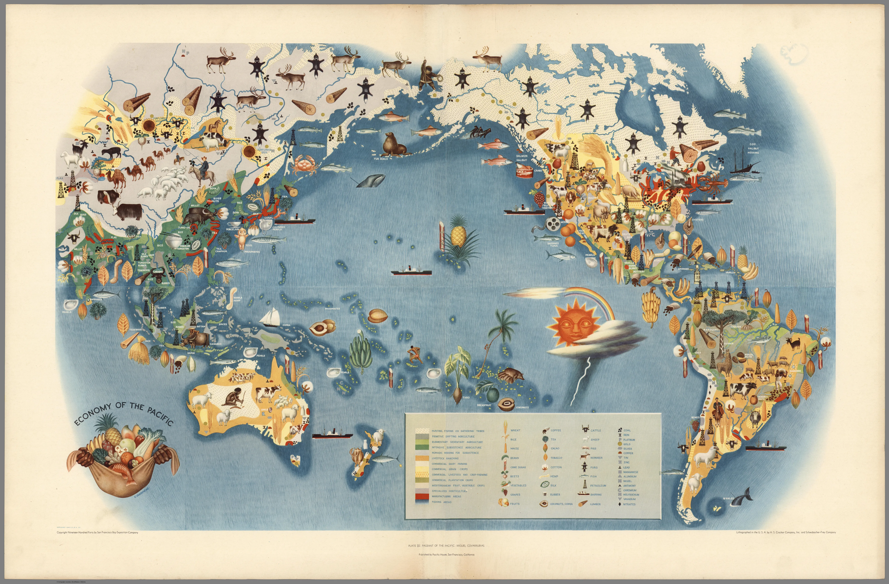
"Economy of the Pacific" by Miguel Covarrubias (1939). One of six maps made for the Pacific House during the Golden Gate International Exposition in San Francisco in 1939.
David Rumsey Map Center Stanford University Libraries
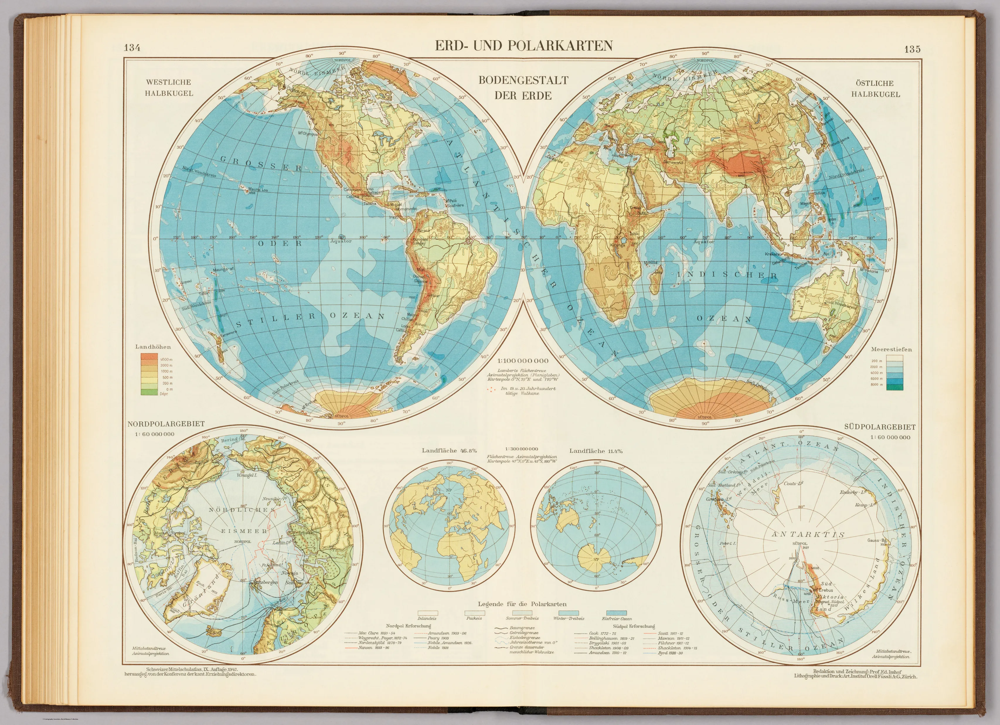
"Erd- und Polarkarten : Bodengestalt der Erde" by Eduard Imhof (1947)
David Rumsey Map Center Stanford University Libraries
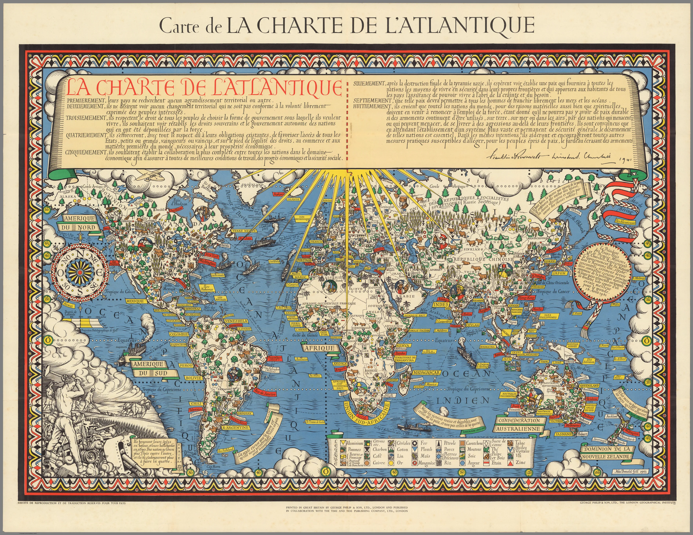
"Carte de la charte de l'Atlantique" by Gill Leslie MacDonald (1943)
David Rumsey Map Center Stanford University Libraries
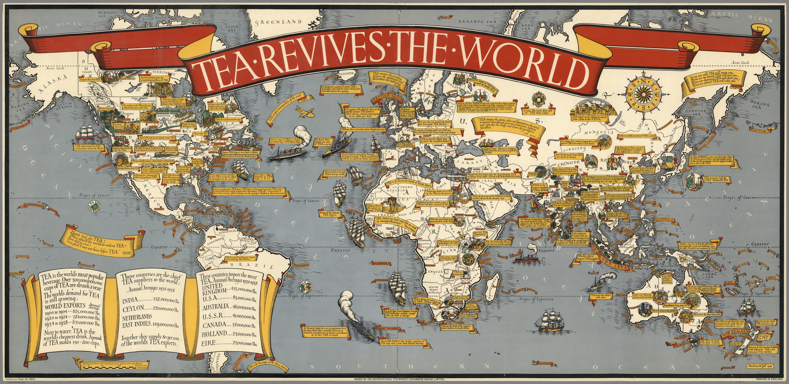
"International Tea Market" by Gill Leslie MacDonald (1940)
David Rumsey Map Center Stanford University Libraries
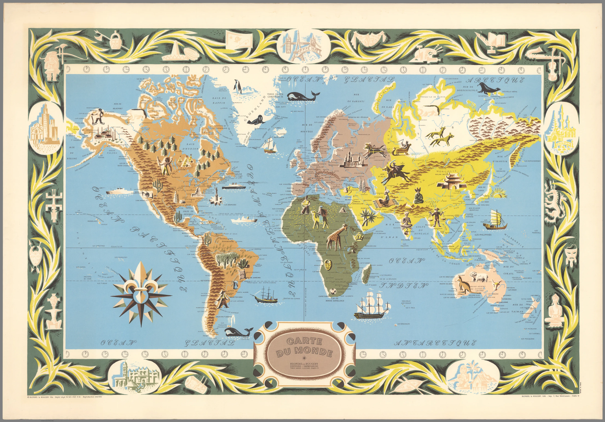
"Carte du Monde" by Blondel La Rougery (1956)
David Rumsey Map Center Stanford University Libraries
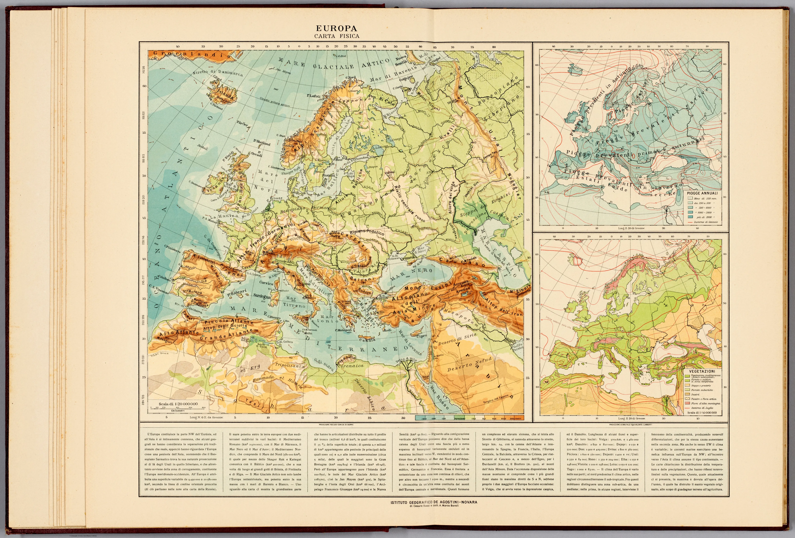
"Europa : Carta fisica" by Mario Baratta (1922)
David Rumsey Map Center Stanford University Libraries
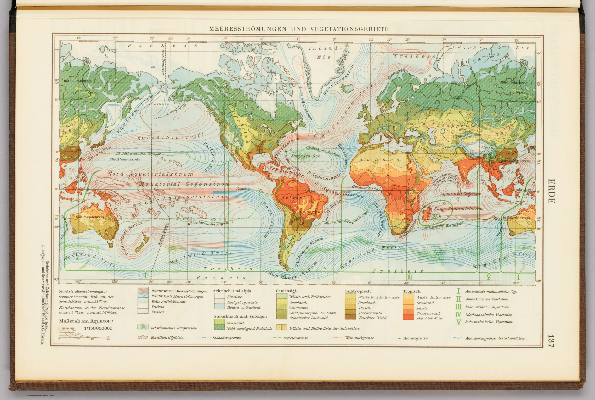
"Erde : Meeresströmungen und Vegetationsgebiete" by Eduard Imhof (1947)
David Rumsey Map Center Stanford University Libraries
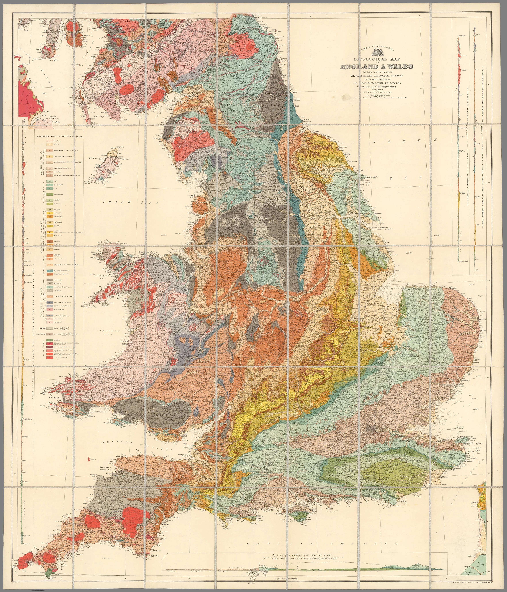
"Geological Map of England and Wales" by Geikie, Archibald (1897)
David Rumsey Map Center Stanford University Libraries
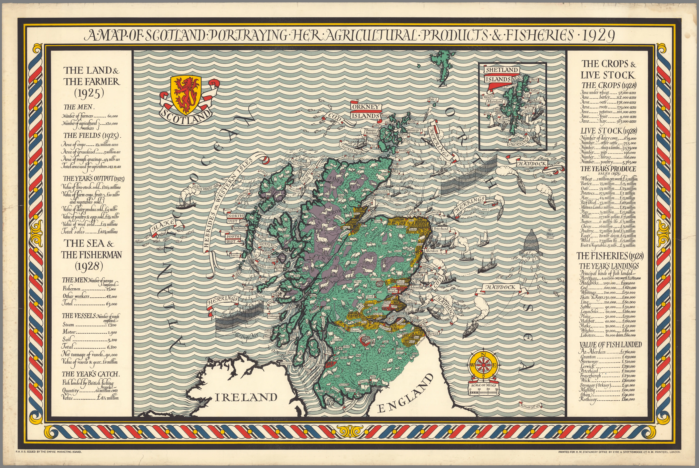
"A Map of Scotland Portraying Her Agricultural Products & Fisheries" by Gill Leslie MacDonald (1929)
David Rumsey Map Center Stanford University Libraries
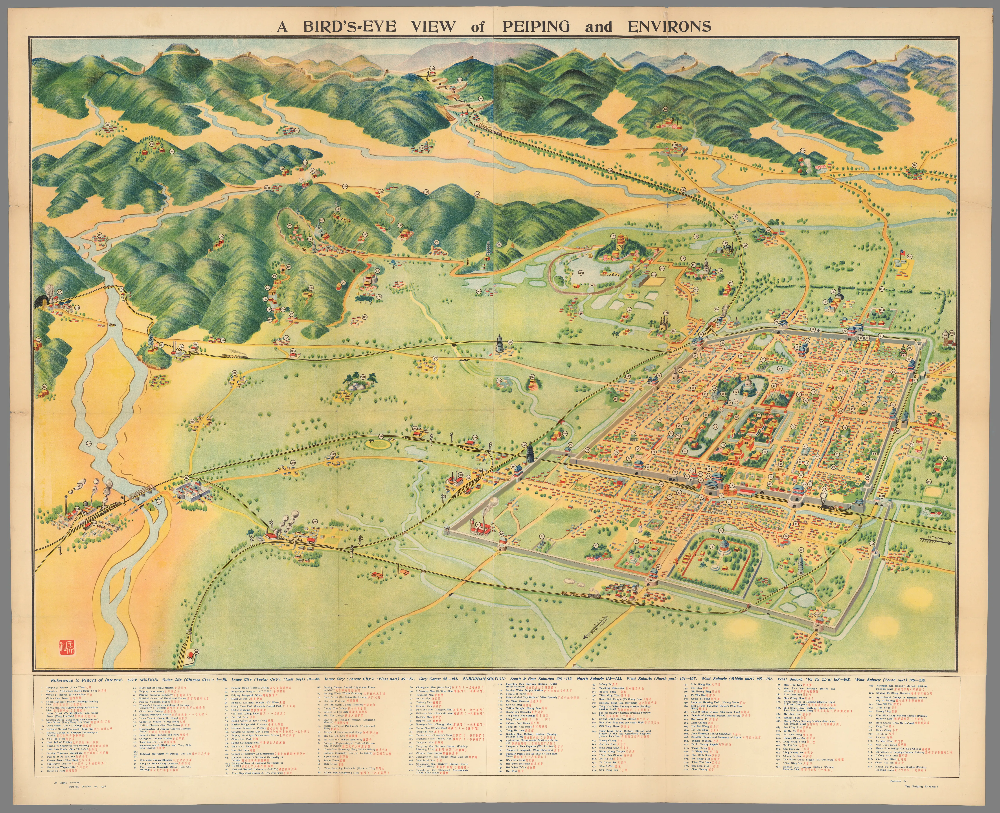
"A Bird's-Eye View of Peiping and Environs" by Wang Wen-Chih (1936)
David Rumsey Map Center Stanford University Libraries
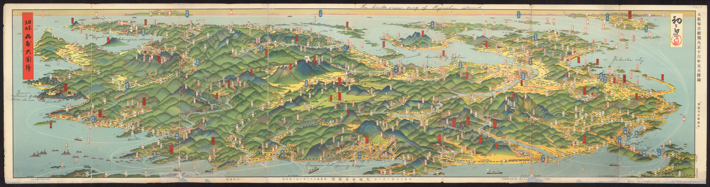
"Bird's-eye View Pictorial Map of Kyushu" by Yoshida Hatsusaburo (1926)
David Rumsey Map Center Stanford University Libraries
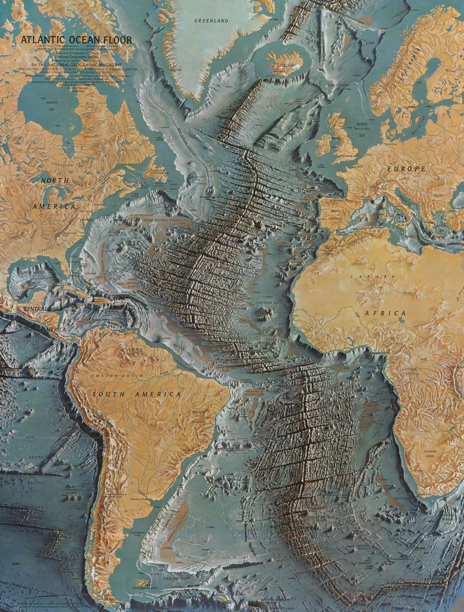
"Atlantic Ocean Floor" by Heinrich Berann (1968)
David Rumsey Map Center Stanford University Libraries